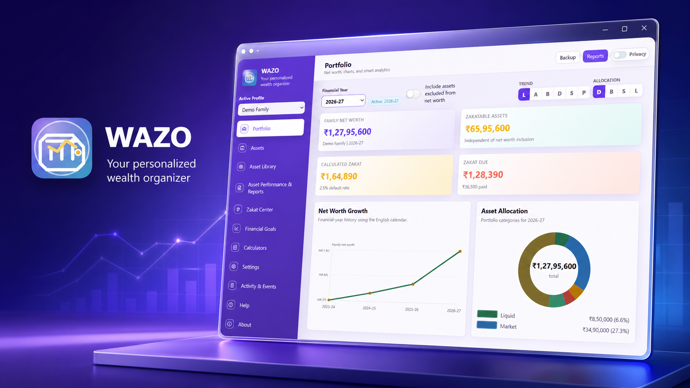
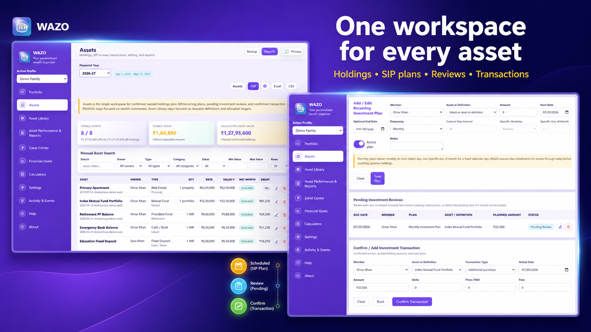
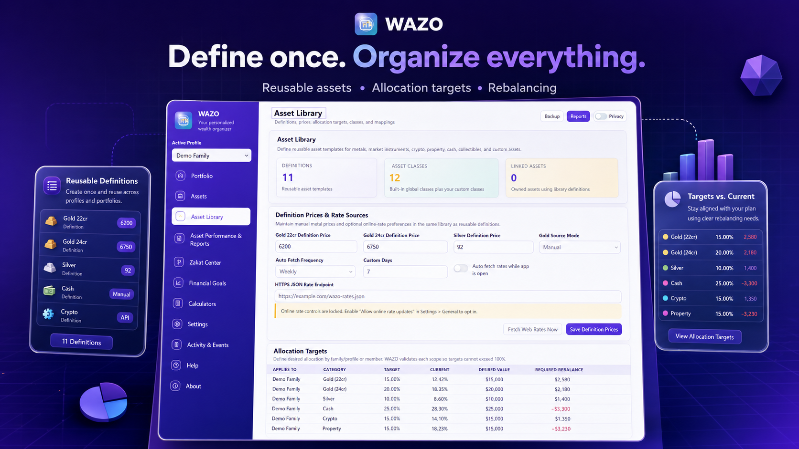
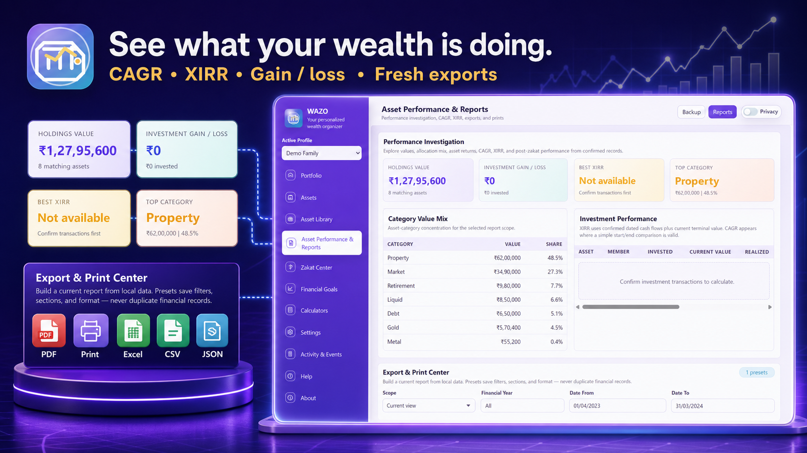
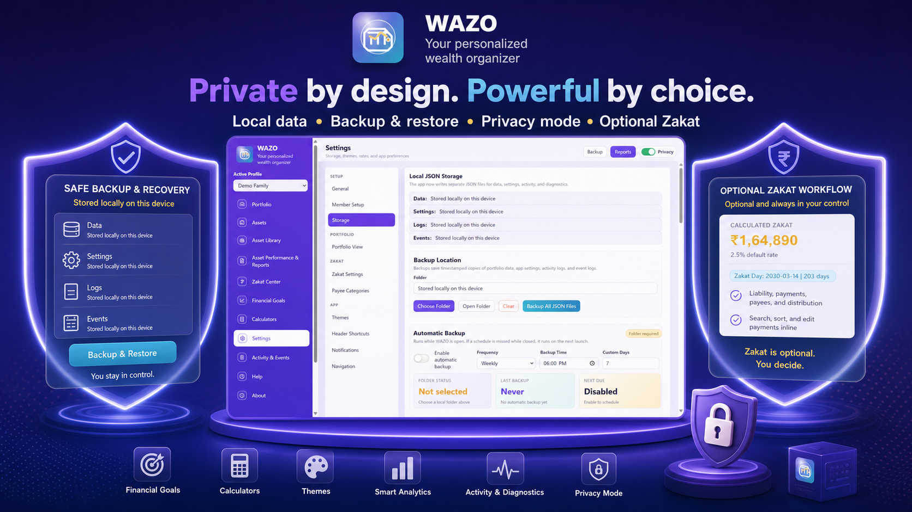

Offline-first wealth management for Windows
See your whole financial life, clearly.
WAZO brings family profiles, member-owned assets, recurring investments, goals, performance, reports, backups, and optional zakat into one private desktop workspace.
- Local JSON data
- Family and member ownership
- Review-first investing
- Optional online rates

What’s new in 1.1.3
A more complete, dependable way to manage wealth.
This update connects setup, asset definitions, investment activity, analysis, exports, and recovery into a clearer end-to-end experience.
Guided first run
Set up your profile, members, country, currency, regional format, financial year, and optional zakat with a focused onboarding flow.
Reusable Asset Library
Define assets once, prefill new holdings, and keep allocation targets beside the categories that drive your portfolio plan.
Unified Assets workspace
Work with holdings, SIP and recurring plans, pending reviews, and confirmed transactions without jumping between disconnected pages.
Review before investing
Backdated recurring plans queue every due installment for review. Holdings and cost basis change only after you confirm each occurrence.
Deeper performance
Investigate category mix, asset gain or loss, CAGR, and XIRR, then create fresh exports from the same reporting workspace.
Safer local recovery
Imports can be previewed before confirmation, protected backups are created before restore or reset, and recovery preserves damaged evidence.
The updated experience
Built around the work you actually do.
Each workspace has a distinct job, with less navigation and clearer decisions.

Assets + investments
One workspace for every asset.
Add a manual holding or start from a reusable definition. Create SIP and recurring plans, review generated occurrences, and confirm the transactions that should affect your portfolio.
- Member-owned assets roll up to the family profile
- Investment plans enable only relevant schedule fields
- Cost basis and holdings update after confirmation

Asset Library
Define once. Organize everything.
Use built-in or custom definitions for funds, equities, metals, crypto, property, cash, physical and digital assets, and anything unique to you.
- Prefill consistent names, types, and categories
- Set allocation targets up to a combined 100%
- Separate net-worth inclusion from other asset controls

Performance + reports
See what your wealth is doing.
Move from portfolio totals to asset-level investigation. Compare category mix, understand returns, and create a fresh output for the view you are analysing.
PDFPrintExcelCSVJSON

Privacy + resilience
Private by design. Powerful by choice.
Core financial records remain local. Privacy mode removes sensitive values from previews, accessible content, and exports—not just from the visible screen.
- Manual and scheduled backups to a folder you choose
- Preview and confirm before importing or restoring
- Optional zakat stays hidden when you do not use it
Everything that matters
Personal wealth is more than a balance.
WAZO keeps the surrounding context—ownership, goals, time, preferences, and protection—close to the numbers.
Profiles and members
Model a family or personal profile while preserving the real owner of every asset.
Financial-year views
Review records across WAZO’s April-to-March financial year and protect historical snapshots from accidental change.
Financial goals
Track progress toward FIRE, retirement, education, property, travel, and custom goals.
Currencies and formats
Choose your working currency and regional date and number format while the interface remains in English.
Optional rate updates
Use offline values by default or explicitly enable protected online rate updates when they are useful.
Optional zakat
Enable zakat planning when needed. Turn it off without deleting its saved data or affecting normal wealth tracking.
Structural privacy
Hide sensitive figures across the screen, preview content, accessibility surfaces, print, and export.
Automatic backups
Choose a schedule and let WAZO detect a missed run while keeping the backup location under your control.
Activity and events
Review changes, warnings, diagnostics, and important app events in one combined history.
How it works
Start guided. Grow at your pace.
The new workflow handles a simple first holding just as comfortably as an active family portfolio.
- 01
Set up your profile
Follow the first-run guide for members, country, currency, regional format, financial year, and optional zakat.
- 02
Shape the Asset Library
Use ready definitions or create your own, then set category allocation targets where needed.
- 03
Add holdings and plans
Create assets directly or from the library, assign each owner, and add recurring investments.
- 04
Review pending activity
Inspect every due recurring occurrence before it becomes a confirmed transaction or changes a holding.
- 05
Analyse and rebalance
Study net worth, category mix, goals, gain or loss, CAGR, XIRR, and target gaps.
- 06
Protect and share
Back up locally, turn on privacy when needed, and export the exact report format you want.
Interactive example
Turn targets into a clearer next step.
Try the illustrative targets below. In WAZO, allocation targets live in the Asset Library and guide portfolio rebalancing.
Example only—not financial advice.
60%
15%
For existing WAZO users
Your setup moves forward with you.
WAZO 1.1.3 is designed to preserve existing profiles, members, settings, assets, and optional zakat preferences. No data re-entry is planned when you upgrade, and startup migration includes protected backup and rollback handling.
Downloads
Install the current public release.
WAZO 1.1.3 is documented on this page, but its installer is still being prepared. Current download links remain unchanged until the new package is ready.
About direct installer warnings
Windows SmartScreen or Chrome may warn that the standalone installer is from an unknown publisher because the direct installer is not yet code-signed. Only use this official page, verify the file name and SHA-256 hash, and choose More info → Run anyway only when those details match.
Recommended
Microsoft Store
Public install channel
Open WAZO’s Microsoft Store listing for the familiar Windows installation experience.
Current direct installer
WAZO v1.0.4
Latest published 1.0.x build
For offline setup and controlled standalone installation while the 1.1.3 package is being prepared.
SHA-2565F77E905169AFF6B8F2FD95EB3F8A62CD5AB6C4D973C2460B165DDC0C2CEF686
Major baseline
WAZO v1.0.0
Original public baseline
Kept for version reference, rollback testing, and controlled comparison.
SHA-256345496F625396510E6A8A04B6946FA1FDF831789FE0943E9CDA22118C9073A04
Support
Tell us what you need.
Choose a template and your email app opens with the useful details already outlined.
Quick answers
Getting started with confidence.
Is the WAZO 1.1.3 installer available?
Not yet. This page previews the completed product experience while packaging is being prepared. Use the current Store listing or published v1.0.4 direct installer until this page is updated.
What happens during first-time setup?
WAZO guides you through a profile, members, country, currency, regional formatting, financial year, and optional zakat so the workspace fits you from the start.
Do existing users need to enter their data again?
No. The 1.1.3 update is designed to migrate and preserve existing profiles, members, settings, assets, and optional zakat preferences, with protected backup and rollback handling.
Does WAZO work offline?
Yes. Core wealth-management workflows are offline-first and store their main data locally as JSON. Online rate updates are optional and must be enabled by you.
How do recurring investments affect holdings?
Due SIP or recurring occurrences appear for review. A holding and its cost basis update only after you confirm the occurrence, including every installment created from a backdated plan.
Where are allocation targets now?
Allocation targets are managed in the Asset Library, alongside reusable asset definitions. Combined targets are limited to 100%.
What can I export?
WAZO provides fresh PDF, print, Excel, CSV, and JSON outputs from its Export & Print Center and supported workspaces, including Assets and optional Zakat.
What does privacy mode protect?
Privacy mode removes sensitive values from visible screens, preview content, accessibility surfaces, print, and export rather than merely covering them with styling.
Is WAZO only for zakat users?
No. WAZO is a general personal wealth organizer. Zakat planning is optional, stays out of the interface when disabled, and can be re-enabled without deleting saved data.
Is WAZO freeware?
Yes. WAZO is intended as a free personal wealth organizer for local use, with no required subscription for the core Windows desktop app.